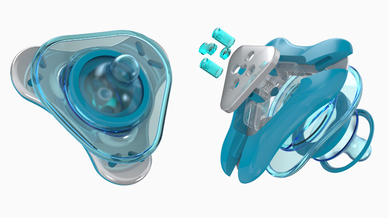
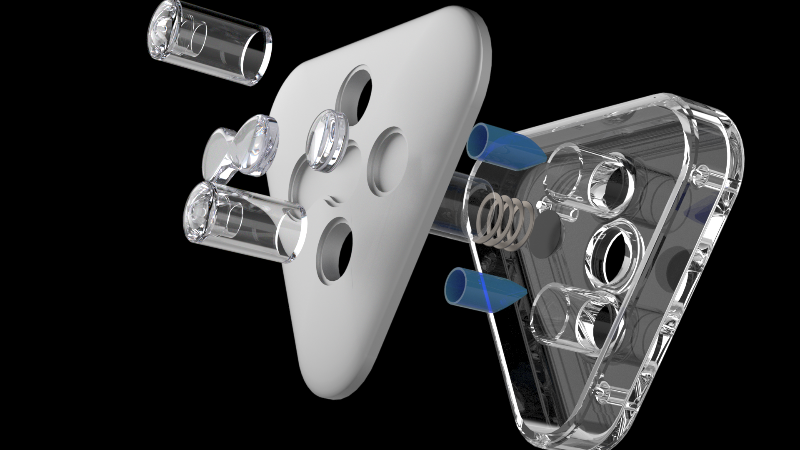
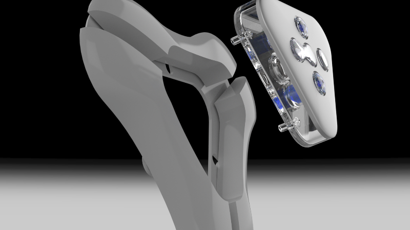
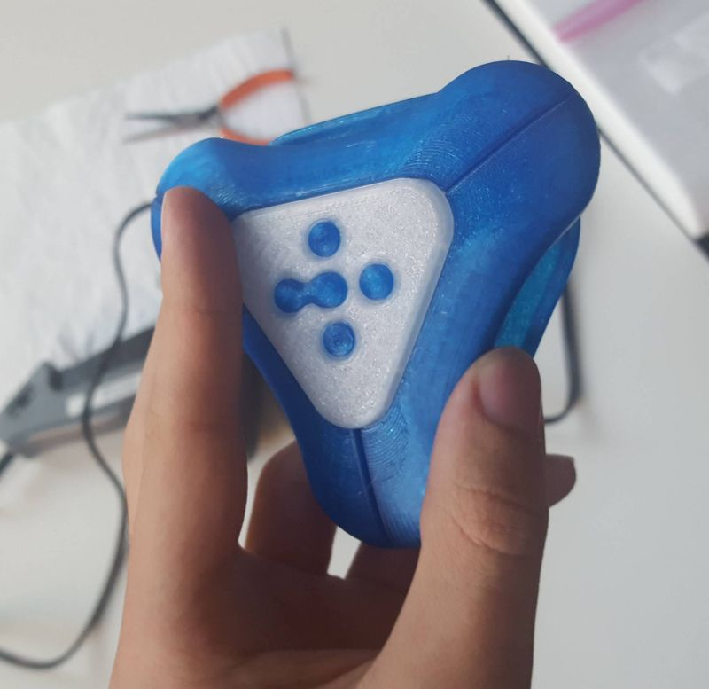
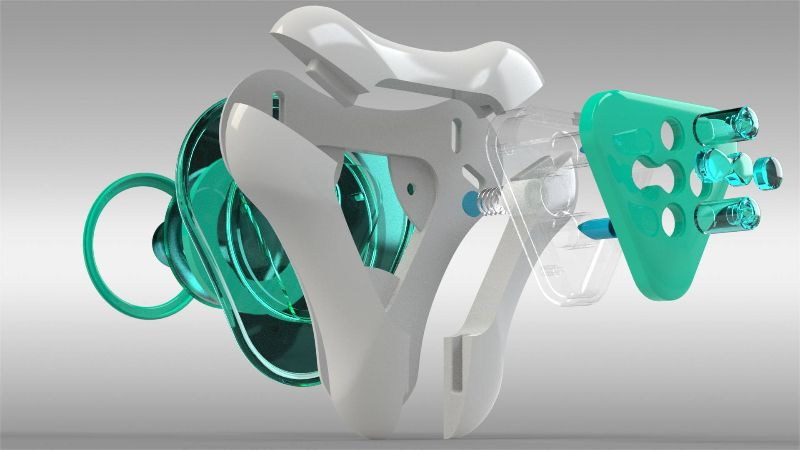
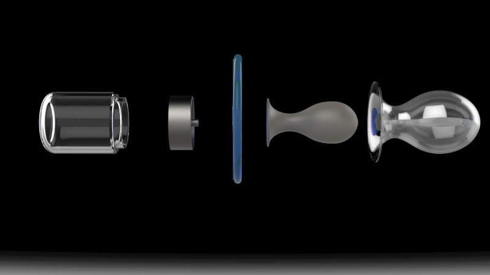
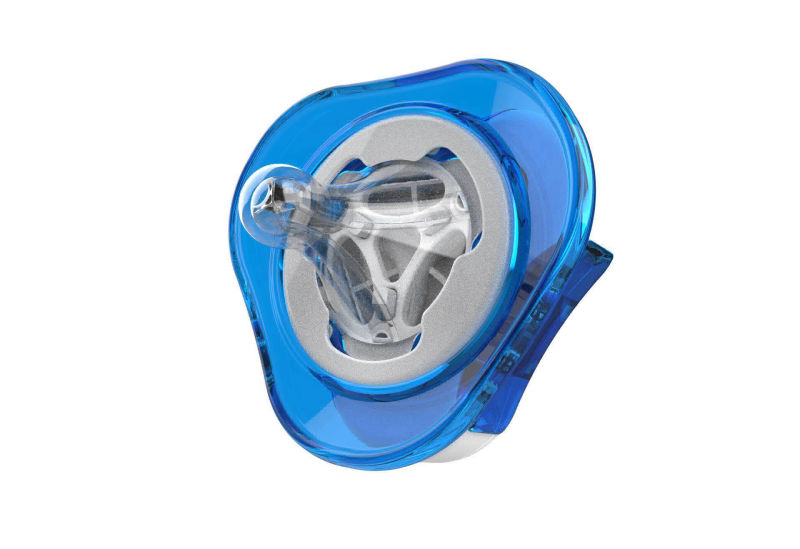
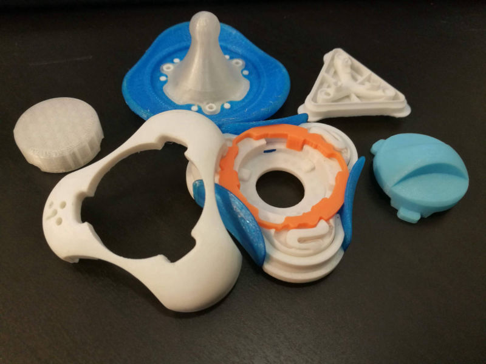

Product explosion
Backside of the nutrient chamber
Breakdown of nutrient chamber
Image showcasing removeable chamber
Alternate front veiw
3D Printed mockup
Alternate product explosion
First mockup, built for marketing imagery while v2 was in development
Explosion of first mockup
The third Nutrifier prototype, which is mechanically functional
Back view of the third prototype
Explosion of the third prototype
Physical print of the third prototype
teardown of the third prototype. All parts fit together without the use of mechanical fasteners
2nd generation buisness cards